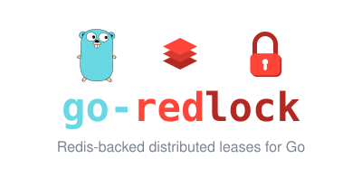

go-redlock
Redis-backed distributed leases for Go
go get github.com/ndyakov/go-redlock
manager, _ := redlock.NewSingle(rdb, redlock.Config{
Expiry: 10 * time.Second,
Attempts: 3,
})
lock := manager.NewLock("orders:{42}:lock",
redlock.WithAutoRenew(3*time.Second),
redlock.WithFencingToken("orders:{42}:fence"),
)
if err := lock.TryLock(ctx); err != nil { return err }
defer lock.Unlock(context.Background())
fence := lock.FencingToken() // monotonic; pass to your writes
- Single-node leases and quorum Redlock over 3+ independent Redis nodes
- Auto-renew heartbeats keep long critical sections held
- Fencing tokens — monotonic counters to reject stale writers
- Context-aware acquire/release; bounded per-node operation timeouts
- CI-tested against a real 3-node Redis matrix, race detector on